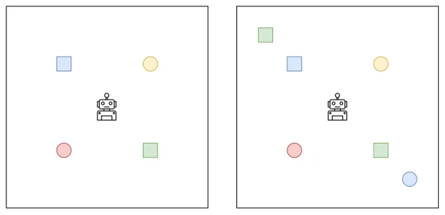
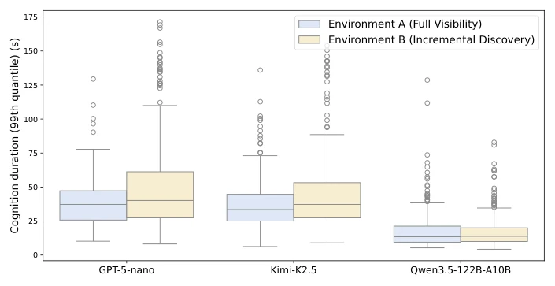

Fig. 1. MAPE-K influenced framework architecture for autonomous robots resolving user intentions in dynamic and unstructured environments.
实验Experiments
Gazebo 仿真，四足机器人。任务分有限（Go to X）和无限（Explore until X）。对比 Qwen3.5, GPT-5-nano, Kimi-K2.5。指标 SR, SE, RF。开源模型表现更好，GPT-5-nano 在长程任务上掉链子。Qwen3.5 推理最快。无限任务下，模型难以判断环境是否探索完毕，导致失败。图 3 显示推理时间差异。环境 B 比环境 A 更难，新物体触发重规划。结果显示，虽然代码生成可靠，但语义 grounding 仍是瓶颈，尤其在多步推理和计数任务上。
—

Fig. 2. Evaluation environments. Left: Environment A (Full Visibility). Right: Envi- ronment B (Incremental Discovery).

Fig. 3. Cognition durations per model and environment